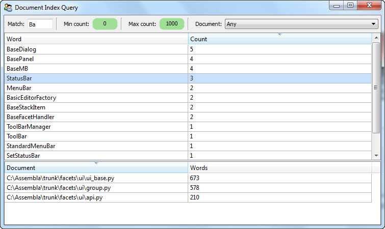

Hopefully the previous sections have whet your appetite for learning more about using the MongoDB OML. So in this section we’re going to attempt to appease your hunger for knowledge with a working example of a complete MongoDB-based application.
Of course, creating a relatively short but effective example can be a bit of a challenge, but we’re optimistic that you will find the example both illustrative and motivating. Since the example comes before you have learned any of the details of using the MongoDB OML, we suggest reading through the example code a couple of times, starting with a quick run through now to get a feeling for what the code looks like, and again later after having read through some of the programming detail sections that follow.
The application is a simple document indexing system that indexes all of the words and their frequency of occurence within a collection of documents. As an added bonus, the system indexes both regular text documents and Python source files. In the case of Python source files, only the non-language keyword symbols are indexed. We threw in Python source file indexing because developers tend to have more Python code lying around than they do copies of War and Peace.
The application is further divided into a command-line program for indexing one or more documents and a Facets UI-based interactive application for querying and browsing the contents of the document index.
The application is spread across three source files:
One of the things that we hope you will see when studying the example application code is how little database programming is involved. For the most part, the code is nearly all related to indexing and UI presentation. Since we assume that you are already familar with this type of code, we will only provide additional commentary on the parts of the code specifically related to using the MongoDB OML.
So with all that said, let’s get started with the file that defines our indexing application data model, document_classes.py:
#-------------------------------------------------------------------------------
# Imports:
#-------------------------------------------------------------------------------
from facets.extra.mongodb.api \
import MongoDBObject, DBStr, DBInt, DBSet
#-------------------------------------------------------------------------------
# 'IndexDocument' class:
#-------------------------------------------------------------------------------
class IndexDocument ( MongoDBObject ):
""" Represents a document in the document index.
"""
# The name of the document:
document = DBStr
# The total number of words contained in the document:
words = DBInt
#-------------------------------------------------------------------------------
# 'IndexWord' class:
#-------------------------------------------------------------------------------
class IndexWord ( MongoDBObject ):
""" Represents the index information for a specific word.
"""
# The word:
word = DBStr( index = True )
# The number of times the word is used in all documents:
count = DBInt
# The set of documents the word occurs in:
documents = DBSet
One of the first things you’ll note in reading through the example’s code is that this is the only file that actually imports any symbols from the MongoDB OML package (i.e. facets.extra.mongodb.api). The remaining two files simply import the two classes defined in this file: IndexDocument and IndexWord. This should be fairly typical of any MongoDB OML-based application. That is, the data model, defined as normal Facets-based classes, encapsulates all of the database specific information, and the remaining application code simply deals (for the most part) with data model classes and instances.
The first thing to note in the above code are the symbols imported from the MongoDB OML package:
from facets.extra.mongodb.api \
import MongoDBObject, DBStr, DBInt, DBSet
MongoDBObject is the base class for any persistable object that can be stored or retrieved from a MongoDB database. One important thing to note is that MongoDBObject derives from the HasFacets base class, and therefore the full power and capability of the Facets package is at your disposal when defining a class that can be stored in a MongoDB database.
The remaining three symbols: DBStr, DBInt and DBSet are special MongoDB oriented facets with semantics identical to the standard Str, Int and Set facets. The DB prefix simply signifies that the values assigned to the corresponding object facets should be saved in the MongoDB database. We’ll cover all of the available MongoDB facets in a later section.
Another important thing to note is that not all facets defined within a MongoDBObject subclass need to have the DB prefix. That is, you are free to use standard facets such as Str or Int as well. The only difference is that the values of standard, non-MongoDB facets are not saved to a MongoDB database when an object is stored. You can use this to your advantage to segregate the facets in a class into persistent (i.e. DBxxx) and non-persistent (i.e. transient) facets. In the case of our example, all of the defined facets are persistent facets that are stored in the MongoDB database.
A quick read through the rest of the source file reveals that it defines two classes, IndexDocument and IndexWord, both of which are subclasses of MongoDBObject, and so instances of these classes can be stored in a MongoDB database. In essence, these two classes define the data model we are using for the document index. An IndexDocument instance keeps track of the total number of words a specific document contains, while an IndexWord document keeps track of the number of times a specific word occurs within a document collection, and which documents within the collection contain at least one occurence of the word.
A careful reader will also have noted the metadata used in the declaration of the word facet of the IndexWord class:
word = DBStr( index = True )
In this case, the index = True metadata indicates that the value of the word facet should be used as a MongoDB database index. This is mainly an application performance enhancement for use by the document indexing application, which needs to randomly retrieve existing IndexWord values from the document index database in the process of indexing a document. Refer to the Defining Indexes section for more information about defining MongoDB indexes.
The main thing to learn from this code is that defining a MongoDB-backed data model is really no different than defining any other Facets-based model. Instead of deriving subclasses from HasFacets, you derive from MongoDBObject, and in addition to defining normal facets, you also define persistent facets using any of the DBxxx facets provided by the MongoDB OML package. So there is really very little difference from the standard Facets programming model. In particular, this can make migrating an existing application to use a MongoDB database a fairly simple task.
Next up is the source code for the command line document indexing tool defined in document_index.py:
#-------------------------------------------------------------------------------
# Imports:
#-------------------------------------------------------------------------------
import sys
from time \
import time
from os.path \
import abspath, splitext
from glob \
import iglob
from cStringIO \
import StringIO
from tokenize \
import generate_tokens, ENDMARKER, NAME
from facets.api \
import HasFacets, Any
from facets.core.facet_base \
import read_file
from document_classes \
import IndexDocument, IndexWord
#-------------------------------------------------------------------------------
# Constants:
#-------------------------------------------------------------------------------
# The correct command usage message:
Usage = """
The correct usage is:
python document_index.py document [ document, ..., document ]
where:
document = The name of a text or Python (.py) source file to be indexed.
"""[1:-1]
# The set of valid characters that can appear in a word:
Letters = 'abcdefghijklmnopqrstuvwxuyABCDEFGHIJKLMNOPQRSTUVWXYZ'
# The set of Python keywords:
PythonKeywords = set( [
'class', 'def', 'if', 'else', 'elif', 'for', 'in', 'try', 'except',
'finally', 'from', 'import', 'return', 'break', 'continue', 'while', 'not',
'and', 'or', 'assert', 'raise', 'del', 'print', 'yield', 'global', 'exec',
'with', 'as', 'is'
] )
#-------------------------------------------------------------------------------
# 'DocumentIndex' class:
#-------------------------------------------------------------------------------
class DocumentIndexer ( HasFacets ):
""" Allows new documents to be added to the document index database.
"""
#-- Facet Definitions ------------------------------------------------------
# A mapping from words we've already seen to IndexWord objects:
all_words = Any( {} )
#-- Public Methods ---------------------------------------------------------
def add ( self, document ):
""" Adds the document whose file name is specified by *document* to the
document index database.
"""
# Normalize the document path:
document = abspath( document )
# Only index documents that we have not already indexed previously:
if IndexDocument( document = document ).load() is not None:
print ("'%s' has already been indexed and is being ignored." %
document)
return False
# Read the contents of the document (if possible):
text = read_file( document )
if text is None:
print "'%s' could not be read and is being ignored." % document
return False
# Select the parsing method to use (Python or normal text):
if splitext( document )[1] == '.py':
next_word = self.parse_python( text )
else:
next_word = self.parse_text( text )
# Parse the document into words and add each valid word to the document
# index, creating new entries in the index for newly encountered words:
words = 0
all_words = self.all_words
for word in next_word():
index_word = all_words.get( word )
if index_word is None:
all_words[ word ] = index_word = \
IndexWord( word = word ).load( add = True )
index_word.documents.add( document )
index_word.count += 1
words += 1
# Add a new entry for the document to the index:
IndexDocument( document = document, words = words ).save()
# Indicate that the document was processed successfully:
print "'%s' has been added to the document index." % document
return True
#-- Private Methods --------------------------------------------------------
def parse_python ( self, source ):
""" Sets up to parse the Python source whose contents are specified by
*source* into a stream of words. Returns an iterator which returns
the next word from the source on each call.
"""
tokenizer = generate_tokens( StringIO( source ).readline )
def parse ( ):
try:
for type, token, first, last, line in tokenizer:
if type == ENDMARKER:
break
if (type == NAME) and (token not in PythonKeywords):
yield token
except:
pass
return parse
def parse_text ( self, text ):
""" Sets up to parse the text document whose contents are specified by
*source* into a stream of words. Returns an iterator which returns
the next word from the document on each call.
"""
def parse ( ):
for word in text.split():
word = (''.join( [ c for c in word if c in Letters ] ).lower())
if word != '':
yield word
return parse
#-- Run the command ------------------------------------------------------------
if __name__ == '__main__':
# Make sure the command usage is correct, otherwise print an error and exit:
if len( sys.argv ) < 2:
print Usage
sys.exit( 1 )
# Create a document indexer and use it to index each command line document:
now = time()
documents = 0
indexer = DocumentIndexer()
for pattern in sys.argv[1:]:
for document in iglob( pattern ):
documents += indexer.add( document )
# Display a summary of the indexing results and execution time:
print '-' * 79
print '%d document%s processed in %.3f seconds.' % (
documents, 's'[ documents == 1: ], time() - now )
Although this file is quite a bit longer than the previous file, nearly all of the code has to do with the document indexing logic. The following list calls out the MongoDB-related bits of code that merit additional explanation:
Here we are performing a simple MongoDB query to see whether a particular document has already been indexed, in which case there is no additional work that needs to be done.
The query is broken into two parts. The IndexDocument( document = document ) code creates a prototype IndexDoxument object which we want to see if the database contains a match for. This is just a standard Facets instance constructor used to construct a prototype object with a particular document value. The .load() method invoked on the prototype object then checks the MongoDB database to see if an IndexDocument object with a matching document value exists. If it does, the method returns a new IndexDocument object containing the full details of the object, including the correct value for the words facet. If no match is found, None is returned.
This is just one possible form of database object query, one that is especially well suited for finding an object when a unique key value is available (in this case the document facet uniquely identifies a particular IndexDocument instance). We’ll see additional query examples in several other parts of this example, with more details available in The MongoDBObject Class section.
The remainder of the code in the source file is simple standard Facets and Python code related to command line processing, document parsing and indexing. Overall, we had:
If you’re not a big fan of the minutiae of database organization and management, the last point may be particularly interesting. Of course, the MongoDB OML package does provide some amount of control over database management, which we’ll cover in more detail in subsequent sections. But the overall design of the package is such that it tries as much as possible to get out of your way and let you focus on application design and logic without having to worry about the underlying database details.
Finally, as an example of the document indexing tool in action, we present the following command line invocation of the tool used to index all of the Python source files contained in the facets.ui package:
>python document_index.py C:\Assembla\trunk\facets\ui\*.py
'C:\Assembla\trunk\facets\ui\action_controller.py' has been added to the document index.
'C:\Assembla\trunk\facets\ui\api.py' has been added to the document index.
'C:\Assembla\trunk\facets\ui\attr_list.py' has been added to the document index.
.
.
.
'C:\Assembla\trunk\facets\ui\view_element.py' has been added to the document index.
'C:\Assembla\trunk\facets\ui\view_elements.py' has been added to the document index.
'C:\Assembla\trunk\facets\ui\__init__.py' has been added to the document index.
-------------------------------------------------------------------------------
63 documents processed in 4.363 seconds.
We’ve elided some of the files processed to shorten the overall output. The example was run on a Intel Core i3 based laptop running Windows 7 with 4 GB of RAM. If you take the time to do the math, you can see that the average time to index a single document was about 69 milliseconds.
As the final chapter in our example trilogy, we’ll now take a look at the Facets UI-based document index query tool defined in document_query.py:
#-------------------------------------------------------------------------------
# Imports:
#-------------------------------------------------------------------------------
from facets.api \
import HasFacets, Str, Range, Enum, Instance, List, Theme, View, HGroup, \
VSplit, Item, GridEditor, ScrubberEditor, on_facet_notify
from facets.ui.grid_adapter \
import GridAdapter
from document_classes \
import IndexDocument, IndexWord
#-------------------------------------------------------------------------------
# 'WordAdapter' class:
#-------------------------------------------------------------------------------
class WordAdapter ( GridAdapter ):
""" Adapts IndexWord instances for use with the GridEditor.
"""
columns = [ ( 'Word', 'word' ), ( 'Count', 'count' ) ]
#-------------------------------------------------------------------------------
# 'DocumentAdapter'
#-------------------------------------------------------------------------------
class DocumentAdapter ( GridAdapter ):
""" Adapts IndexDocument instances for use with the GridEditor.
"""
columns = [ ('Document', 'document' ), ( 'Words', 'words' ) ]
#-------------------------------------------------------------------------------
# 'DocumentQuery' class:
#-------------------------------------------------------------------------------
class DocumentQuery ( HasFacets ):
""" Represents a query against the document index.
"""
#-- Facet Definitions ------------------------------------------------------
# The substring used to match a partial or complete word in the index:
match = Str
# The minimum word count to match:
min_count = Range( 0, 1000000, 0 )
# The maximum word count to match:
max_count = Range( 0, 1000000, 0 )
# The document to restrict the search to:
document = Enum( 'Any', values = 'all_documents' )
# The list of all documents in the document index:
all_documents = List
# The list of index words matching the current query values:
words = List
# The currently selected word:
word = Instance( IndexWord )
# The list of documents the currently selected word is contained in:
documents = List
#-- Facet View Definitions -------------------------------------------------
view = View(
HGroup(
Item( 'match', springy = True ), '_',
Item( 'min_count',
editor = ScrubberEditor(),
width = -50,
item_theme = Theme( '@std:LG' )
), '_',
Item( 'max_count',
editor = ScrubberEditor(),
width = -50,
item_theme = Theme( '@std:LG' )
), '_',
Item( 'document' )
),
VSplit(
Item( 'words',
editor = GridEditor( adapter = WordAdapter,
operations = [ 'sort' ],
selected = 'word' )
),
Item( 'documents',
editor = GridEditor( adapter = DocumentAdapter,
operations = [ 'sort' ] )
),
show_labels = False
),
title = 'Document Index Query',
id = 'facets.extra.mongodb.examples.document_query.'
'DocumentQuery',
width = 0.50,
height = 0.67,
resizable = True
)
#-- Facet Default Values ---------------------------------------------------
def _all_documents_default ( self ):
return ([ 'Any' ] + [ id.document for id in IndexDocument().all() ])
#-- Facet Event Handlers ---------------------------------------------------
@on_facet_notify( 'match, min_count, max_count, document' )
def _query_modified ( self ):
""" Handles any facet affecting the current query being changed.
"""
query = []
if self.match != '':
query.append( "(word == '/%s/')" % self.match )
if self.min_count > 1:
query.append( '(count >= %s)' % self.min_count )
if self.max_count < 1000000:
query.append( '(count <= %s)' % self.max_count )
if self.document != 'Any':
query.append( "(documents == ['%s'])" %
self.document.replace( '\\', '\\\\' ) )
self.word = None
self.words = IndexWord().all( ' and '.join( query ) )
def _word_changed ( self, word ):
""" Handles the 'word' facet being changed.
"""
documents = []
if word is not None:
documents = [ IndexDocument( document = document ).load()
for document in word.documents ]
self.documents = documents
#-- Run the program ------------------------------------------------------------
if __name__ == '__main__':
DocumentQuery().edit_facets()
As in the document indexer code, there is a fair amount of code here, but again most of it is involved with the query presentation details, with only three methods dealing specifically with the MongoDB database:
This method handles returning the default value for the all_documents facet, which is used to define an enumeration of all possible indexed documents currently in the document index database. It creates this list using the code: [ id.document for id in IndexDocument().all() ].
This is an example of a database query using the MongoDBObject class’s all method. With no arguments, the all method returns all instances of a particular object type within the database; in this case it returns all instances of the IndexDocument class, from which the document file name, represented by the document facet, is extracted.
Note the All value prepended to the list is used to indicate that no particular document is being selected for the query.
This method is the heart of the query application and is invoked whenever any facet related to forming a query changes value. The method works by building up a Python-based query string based upon the current values of the query items displayed on the top line of the application view. A typical query formed by this method might look something like:
"(word == '/self/') and (count >= 5)"
which can be read as: find any objects where word contains self and count is greater than or equal to 5.
The line: self.words = IndexWord().all( ‘ and ‘.join( query ) ) then performs a query that returns all IndexWord instances matching the specified query string. In this case, the all method is passed an explicit query string and so only returns the objects matching the query rather than all possible objects. The resulting list of IndexWord objects is then assigned to self.words, causing the topmost table view to be updated with the query results.
Although this file contains more database related code, by far the largest part is devoted to converting the various query UI values into an equivalent database query string. Omitting that code, there are only three lines of code explicitly related to database query logic.
A screen shot of the document query application in action is shown below:
This shot shows the query application being run after performing the document indexing command shown at the end of the previous section. It shows the results of querying for all words containing Ba with at most 1000 uses. In addition, the StatusBar entry has been selected, resulting in the bottom half of the view showing all documents StatusBar occurs in, along with the total number of words indexed in each referenced document.
Well, that completes the tour of our complete sample MongoDB OML application. At this point you’re probably either totally pysched or completely baffled. In either case, we hope you’ll continue on to learn more about the details of using the MongoDB OML package in your own applications.